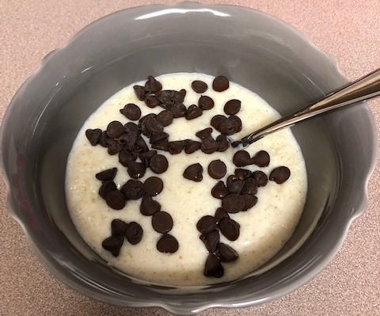

Recipe | Rich Cream of Wheat
Cream of wheat is an excellent hot cereal that can serve as a blank canvas for interesting flavors and recipes, both sweet and savory. This recipe is a for a sweet breakfast cereal.
Ingredients
- 1/4 cup Cream of Wheat (farina flour)
- 1 cup milk
- 1/2 cup heavy cream
- 1 Tbsp
- Pinch of salt
- 1/8 tsp vanilla extract
- 2 Tbsp semi-sweet chocolate chips
Steps
- Put milk, cream, and salt in pot on medium heat
- When liquid is hot, put in dry Cream of Wheat powder
- Stir continuously to avoid burning and clumps until thickened
- Stir vanilla and butter into hot Cream of Wheat
- Pour into bowl and top with chocolate chips
Conclusion
This single bowl of extra T H I C C Cream of Wheat is very filling dish suitable for breakfast. Cream of Wheat leaves the cook with plenty of room to experiement with interesting flavors. Peanut butter and jelly come to mind...
